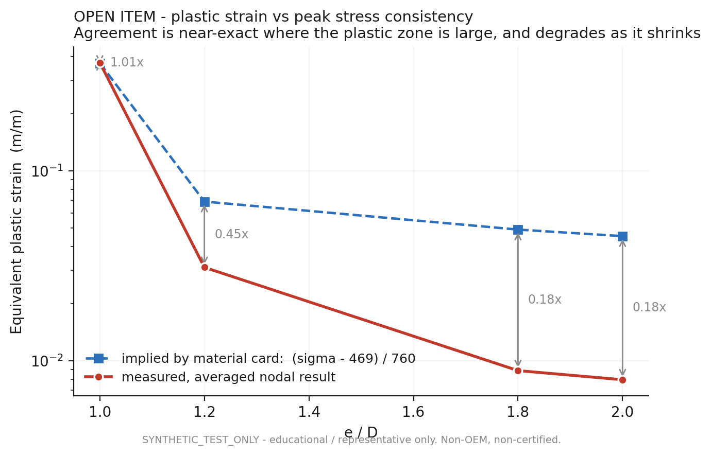
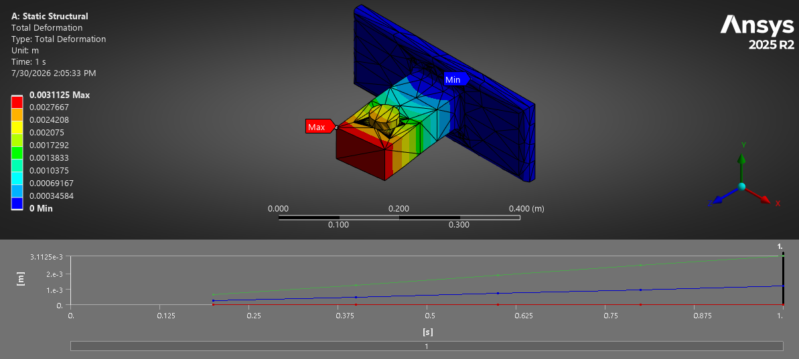

PRJ-08 · Structures / nonlinear FEA · documented study
AeroFrame-DT
A traceable design study for a forward pylon-to-wingbox attachment fitting, from parametric geometry and synthetic load definition to nonlinear finite-element evidence.
 DATUM A / WINGBOX INTERFACE
DATUM B / PIN AXIS
DATUM A / WINGBOX INTERFACE
DATUM B / PIN AXIS
01Engineering question
A pylon attachment fitting has several plausible failure paths: bearing at the pin, net-section tension, shear-out through the free edge, local plasticity at the bore, and global compliance through the web and flange. A solver contour alone does not identify which model is trustworthy.
The project question was narrower and more useful: which geometric ratio actually controls the response, and which attractive-looking outputs should be rejected before they become claims?
All loads and geometry in this study are synthetic, educational, non-OEM, and non-certified. The evidence demonstrates engineering process and judgment, not aircraft substantiation.
02Requirements
| ID | Requirement | Verification |
|---|---|---|
| DT-001 | Geometry inputs shall be frozen and source-traceable before comparison | Parameter schema + decision record |
| DT-002 | The design load shall be applied through the pin bore, not as a point load | FE model review |
| DT-003 | Hand calculations shall screen bearing, net section and shear-out | Independent calculation sweep |
| DT-004 | The edge-distance trade shall cover the mode transition | Five e/D configurations |
| DT-005 | Elastic cases shall track a simple stiffness estimate | Deformation correlation |
| DT-006 | Plastic results shall be checked against the material-card implication | Equivalent plastic strain audit |
| DT-007 | Unresolved assumptions shall remain visible | Open-item register |
03Load basis
The Rev A screening envelope used representative transport-category conditions as rationale while keeping every magnitude explicitly synthetic. The propulsion-system load was distributed between forward and aft attachment stations for the first fitting-level estimate.
| Case | Direction | Factor | Ultimate | Role |
|---|---|---|---|---|
| LC-01 | Vertical +Z | 2.5 g × 1.5 | 220.7 kN | Manoeuvre screening |
| LC-02 | Forward +X | 9.0 g | 529.7 kN | Governing system envelope |
| LC-03 | Lateral +Y | 3.0 g × 1.5 | 264.9 kN | Side-load screening |
| LC-04 | Combined transient | Dynamic | Deferred | Future analysis |
The two values belong to different analysis configurations and are kept separate. The 50/50 split omits the pitching couple from propulsion-system CG offset, so it is a lower-bound screening assumption.
04Parametric geometry
Ten controlled variables tied the approved design envelope to the Python geometry, STEP deliverables, drawing package and FE variants. The baseline was authored in inches and converted to SI for calculation.
| Pin diameter | 2.000 in / 50.800 mm |
|---|---|
| Lug thickness | 1.500 in / 38.100 mm |
| Lug width | 4.000 in / 101.600 mm |
| Edge distance | 2.500 in / 63.500 mm |
| Flange / web | 25.400 / 19.050 mm |
|---|---|
| Blend radius | 12.700 mm minimum |
| Fastener pattern | 4 × 2, nominal 0.250 in |
| Ratios | e/D 1.25 · W/D 2.00 · t/D 0.75 |
05Analysis models
Independent lug checks
The two-plane shear-out expression is screening-only below the failure-regime transition. It does not capture the full shear-out / hoop-tension interaction.
FE correlation checks
The Rev A decision record names representative 7075-T7351. The later sweep plot identifies 7075-T651 with Ftu = 517 MPa and Fsu = 303 MPa. They are not blended into one certified allowable basis; the material-basis distinction remains explicit.
06Finite-element setup

- Load introduction. Bearing load transferred through the modeled pin and bore instead of a concentrated point force.
- Critical region. Mesh refinement follows the bore, ligament and web-to-flange blend where gradients are expected.
- Variant control. The e/D parameter changes while load, diameter and thickness remain controlled within the sweep.
- Nonlinear evidence. Stress and plastic-strain outputs are evaluated together rather than treating peak stress as an elastic margin.
07Validation

- Elastic deformation follows 1.97 times the simple shank-stretch estimate to within 1.7%.
- Peak von Mises response remains comparatively flat from e/D 1.2 through 2.0 even as the simplified shear-out margin changes strongly.
- The e/D 1.0 point is not used as a design result because the response exceeds the material model's ductility range.
08Results

Below this point, the screening shear-out expression predicts failure.
Above the crossover, added edge distance no longer improves the governing bearing mode.
Approximately constant across the sweep because projected bearing area does not depend on e.
The edge-distance rule stopped being treated as a binary geometry-validity test. It became a failure-regime flag that determines which analysis method can govern.
09Recorded engineering decision
Retain the Rev A baseline at e/D = 1.25
The original constraint logic rejected any geometry below 1.5D. Review of the lug method showed that 1.5D is approximately a boundary between failure regimes, not a universal physical-validity floor. The actual physical floor is a positive ligament, e > D/2.
| Question | Decision | Consequence |
|---|---|---|
| Increase edge distance? | No, retain 2.500 in / e/D 1.25 | Avoid mass and drawing rework that do not improve the limiting mode |
| Keep 1.5D as a hard failure? | No, convert it to a regime flag | Automation reports analysis-method risk instead of rejecting valid geometry |
| Allow simple shear-out to govern? | No, screening only below the transition | K-coefficient lug analysis plus solid FEA required |
| Fatigue-critical location? | Pin bore retained | Reduced edge distance carried into fatigue follow-on work |
10Verification record
The portfolio page is downstream of the project evidence. The artifacts below existed before this presentation and carry the assumptions, configuration and solver state.
| Artifact | What it proves | State |
|---|---|---|
| PARAMETER_SCHEMA.csv | Ten controlled geometry values with decision-source IDs | Set |
| LOAD_BASIS_AF-DT-1000_revA.md | Four-case envelope, load split, claim boundary and open load-path item | Approved |
| DECISIONS_AF-DT-1000_revA.md | e/D decision, analytical limits and binding follow-on work | Recorded |
| AF-DT-1000_fitting_revD_mm.step | Released parametric solid in analysis units | Rev D |
| revdconverged.wbpz | Archived ANSYS model and solver state | Archived |
| fig1 / fig2 / fig3 | Hand-check sweep, FE trend correlation and plastic-strain audit | Evidence |
11Limits and open findings
The 50/50 station split excludes the pitching couple from propulsion-system CG offset. The fitting load is therefore a screening lower bound, not a final substantiation load.
Measured nodal plastic strain agrees with the material-card implication when the plastic zone is large, then falls to roughly 0.18 times the implied value as the zone shrinks.
No certified basis is frozen for material product form, thickness or grain direction. T651 and T7351 references remain configuration-specific.
The separate contact-model screenshot reports a 1.05 GPa maximum. Because that exceeds yield and is hotspot-sensitive, it is shown as load-path evidence, not quoted as a final margin.

12Lessons learned
- A screening rule is not a law of physics. The 1.5D threshold became useful only after it was reframed as a failure-regime transition.
- Trend agreement is stronger than one contour. Five controlled variants revealed what stayed flat, what scaled, and what became nonphysical.
- Configuration differences belong in the result. Loads, materials and geometry revisions are kept separate rather than blended into a cleaner story.
- An unresolved inconsistency is evidence too. The plastic-strain mismatch is visible because it changes what can be claimed.
- Traceability makes the portfolio credible. Every headline number maps to a calculation, solver artifact or recorded decision.
13Model evidence


14Next work
- Define the actual forward/aft station geometry and propulsion CG offset, then replace the 50/50 split with a free-body solution including the pitching couple.
- Freeze one material allowable basis with product form, thickness, grain direction and statistical basis.
- Resolve the nodal averaging and integration-point recovery behind the small-zone plastic-strain mismatch.
- Run a formal bore-region mesh-convergence study and separate structural stress from contact singularity.
- Carry the accepted geometry into fatigue and tolerance-stack assessments at the pin bore.